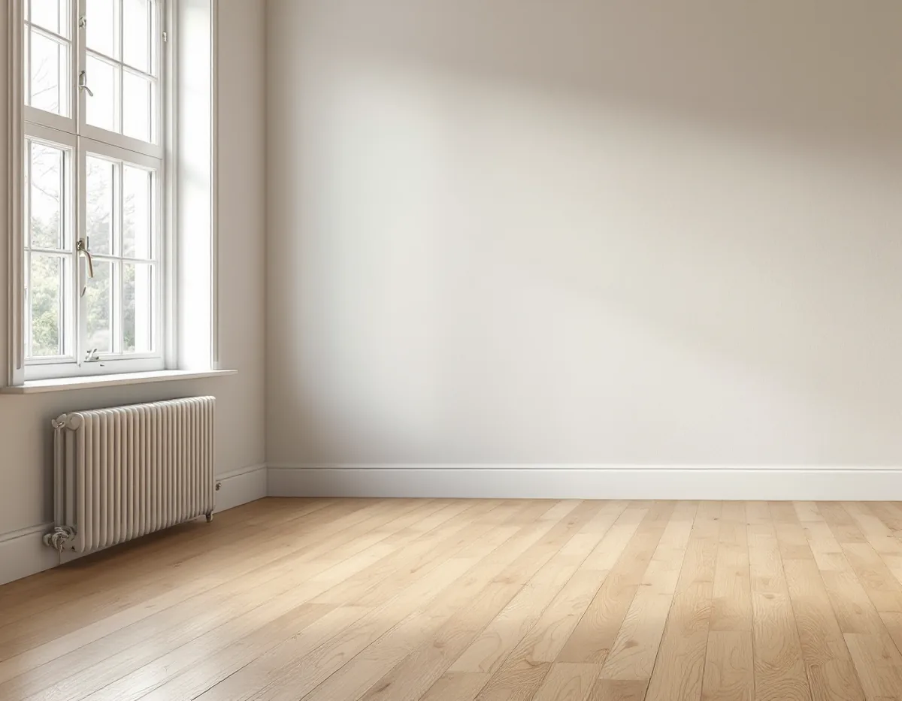
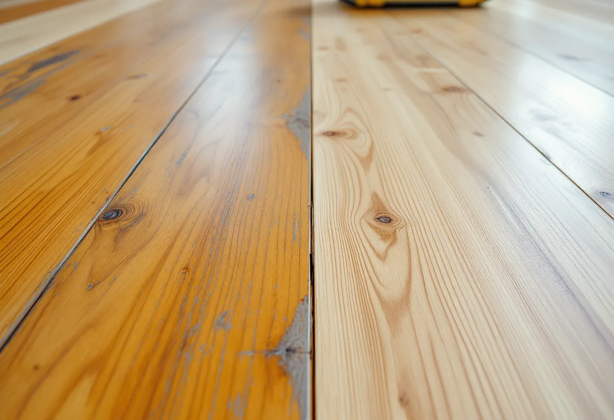

Platsbesök
Vi tar reda på vad golvet har behandlats med och vilket träslag det är.
När ett trägolv slipas ner till rent trä är det ett bra tillfälle att byta yta, till exempel från en blank lack till en matt olja. Alla byten fungerar inte lika bra, och det gamla medlet måste bort helt. Geal Entreprenad AB slipar och ytbehandlar trägolv i Huddinge, och vill du byta yta går vi igenom vad det gamla golvet har fått tidigare och vad det tål.

Huddinges kulturmiljöprogram berättar att Västra stambanan med en mellanstation i Huddinge öppnade för trafik 1860 och att villabebyggelsen sedan växte fram på höjderna. Hörningsnäs villastad, Huddinge villastad och Stuvsta egnahemsområde kom till, och områdena blev municipalsamhällen: Hörningsnäs 1915, Huddinge, Fullersta, Stuvsta och Segeltorp 1924 och Snättringe 1929. År 1947 slogs Hörningsnäs, Huddinge, Stuvsta och Snättringe samman till Huddinge stormunicipal.
Under 1940-talet fortsatte egnahemsbygget, och kataloghus uppfördes som enkla träbyggnader med flacka sadeltak. Från 1940–50-talen finns många småhus där tegel och puts är tongivande. I hus med så många år bakom sig kan golven ha behandlats på flera sätt, och det påverkar vad som går att lägga på härnäst.

Golvbranschens riktlinjer för oljebehandling, OLJA 22, säger att olja ska läggas på ett torrt, rent och nyslipat golv. Ytan ska vara fri från fett, såpa, vax och lackrester. Ett lackat golv som ska oljas måste därför slipas tills all lack är borta, även i hörnen och längs listerna, och slipningen avslutas med korn 100 för barrträ och 120 för lövträ.
Fuktkvoten får inte överstiga 12 procent i barrträ och 8 procent i lövträ, och rummet bör hålla normal rumstemperatur och 30–60 procents luftfuktighet. I riktlinjerna för lutbehandling, LUT 22, står att ofärgad golvolja kan ge träet en bärnstensfärgad nyans som ljusnar något med tiden. Vill du ha ett ljusare eller mörkare golv finns pigmenterad olja.
Ett oljat golv underhålls på ett annat sätt än ett lackat. Hur det går till beskrivs på sidan om golvslipning i Nacka.
Åt andra hållet är det mer begränsat. Riktlinjerna för lackering, LACK 22, skriver att lackering på oljebehandlade golv fungerar för vissa fabrikat och att leverantörernas rekommendationer ska följas. Lackering på lutbehandlade golv avråds helt, och även LUT 22 säger att lack på lut inte rekommenderas.
Har golvet lutats är det alltså såpa, golvolja eller hårdvaxolja som LUT 22 beskriver som slutbehandling. Är det oklart vad golvet har behandlats med gör vi ett prov på en undanskymd yta.
När ny lack väljs finns också en begränsning: LACK 22 anger att formaldehydavgivande syrahärdande golvlack är förbjuden att använda. Riktlinjerna avser vattendispergerade lacker, och olika lacker och fabrikat ska inte blandas.
Ett golv som legat under lack i många år kan ha en annan färg än du väntar dig när det slipats fram. Golvbranschens bedömningsgrunder för massiva trägolv anger att färgförändring i trä på grund av UV-ljus och den rödfärgning som ett furugolv får inte åtgärdas.
Vill du jämna ut tonen är en pigmenterad olja ett sätt. Golvbranschen säger att den som beställer pigmentering ska visa ett prov på önskad kulör, och att den som utför arbetet bör göra ett prov på golvet innan behandlingen startar.
Är golvet för tunt för att slipas, eller vill du byta från plastmatta till trä, finns mer under golvläggare i Huddinge och på sidan om golvläggning.
Vi tar reda på vad golvet har behandlats med och vilket träslag det är.
Är det oklart gör vi ett prov på en undanskymd yta.
Slipning, ny ytbehandling och eventuell pigmentering står som egna poster.
All gammal yta slipas bort, och slipningen avslutas med rätt korn för träslaget.
Olja, hårdvaxolja eller lack läggs i det antal lager som behövs.
Du får råd om hur den nya ytan ska städas och underhållas.
Att slipa golv i ett småhus räknas som rotarbete enligt Skatteverket. Det är arbetstiden på plats som ger avdrag, inte olja, lack eller pigment.
Avdraget är 30 procent av arbetskostnaden, högst 50 000 kr per person och år och högst 75 000 kr tillsammans med rutavdrag. Resor ger inget avdrag. Geal drar avdraget direkt på fakturan.
Golvytan, hur mycket gammal yta som ska slipas bort, vilket träslag golvet är av och vilken ny ytbehandling du väljer. Efter ett gratis platsbesök får du ett skriftligt kostnadsförslag.
Parkett, trägolv, klinker och slipning.
Golvläggning i Stockholm →Takbyte, takbesiktning och plåtarbeten.
Takläggare i Huddinge →Stuvsta, Snättringe och Skogås.
Takrenovering i Huddinge →Avlopp, egen brunn och ritningar.
Attefallshus i Huddinge →Grannar, tomtgräns och lovärendet.
Byggföretag i Huddinge →Nytt trä i en gammal fasad.
Fasadmålning i Huddinge →Egnahem, grupphus och 70-talsvillor.
Fönsterbyte i Huddinge →Okopplade bågar, tätning och lagning av bottenstycken.
Fönsterrenovering i Huddinge →Egnahem, grupphus och permanentade stugor.
Badrumsrenovering i Huddinge →Villor, grupphus och fritidshus i Huddinge.
Fasadrenovering i Huddinge →Grupphus, radhus och kedjehus i Huddinge.
Golvläggare i Huddinge →Grupphus, egnahem och stugor.
Köksrenovering i Huddinge →Fasad, fönster och rum i Huddinge.
Målare i Huddinge →Rännor, dagvatten och brutna tak.
Plåtslagare i Huddinge →Altaner, förråd och gäststugor.
Snickare i Huddinge →Tyngre tak, stugor och landsbygd.
Takbyte i Huddinge →Ny tapet på lagad spännpapp.
Tapetsering i Huddinge →Råd för tre epoker av småhus.
Tillbyggnad i Huddinge →Rekordårens hus inifrån och ut.
Totalrenovering i Huddinge →